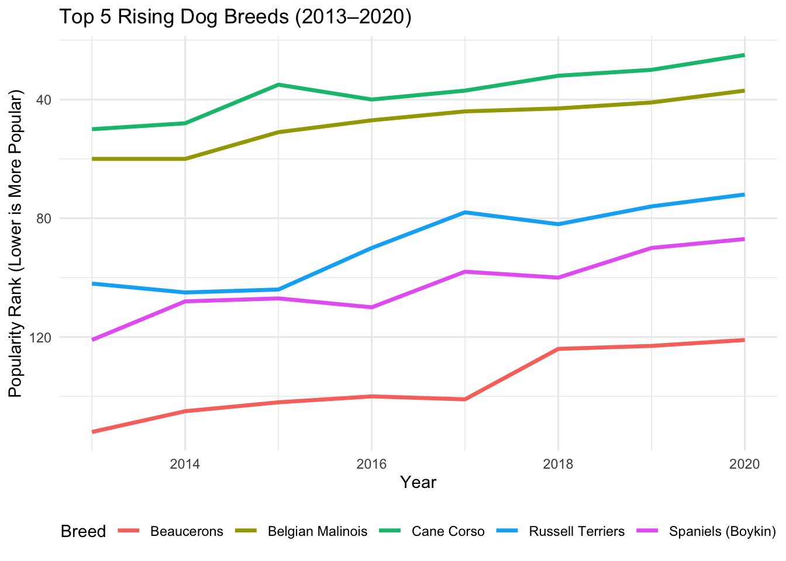
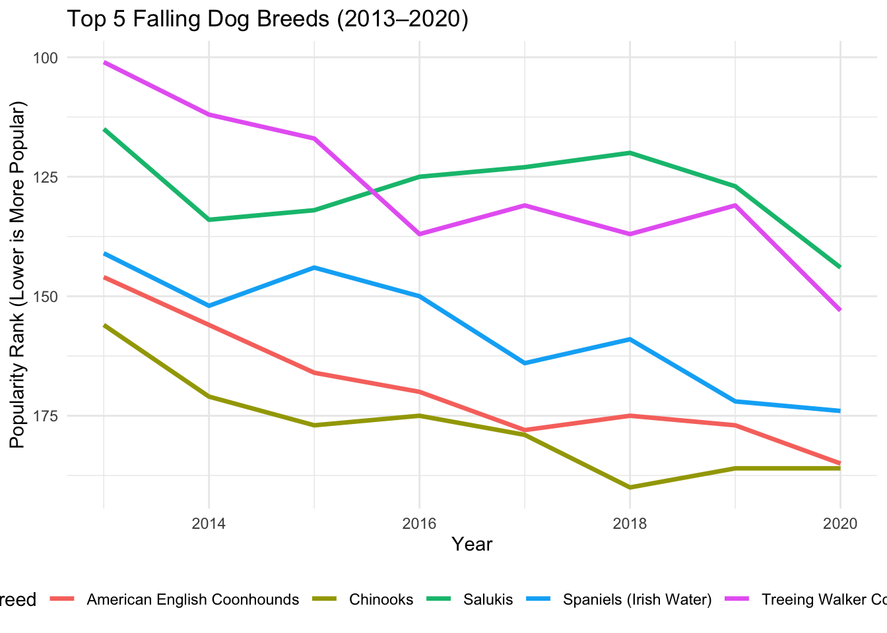
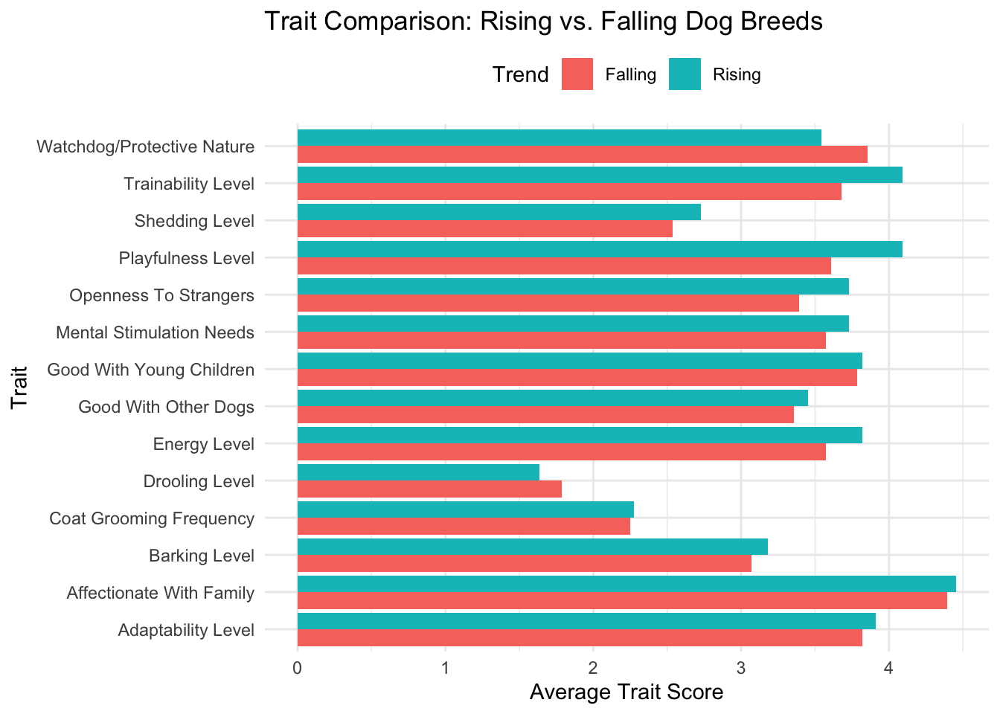
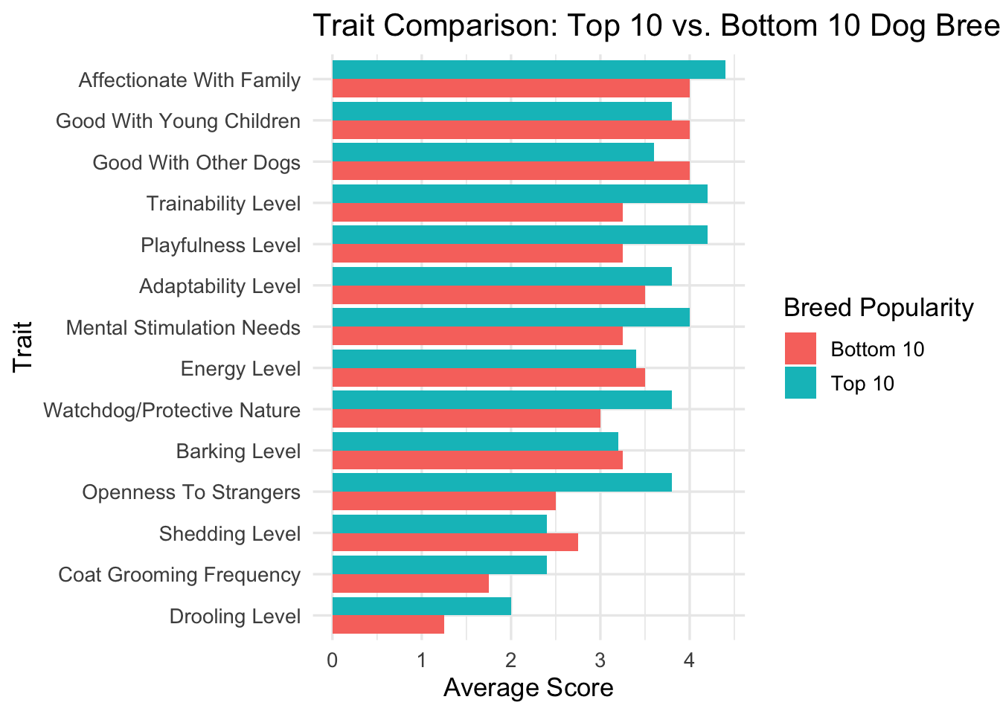
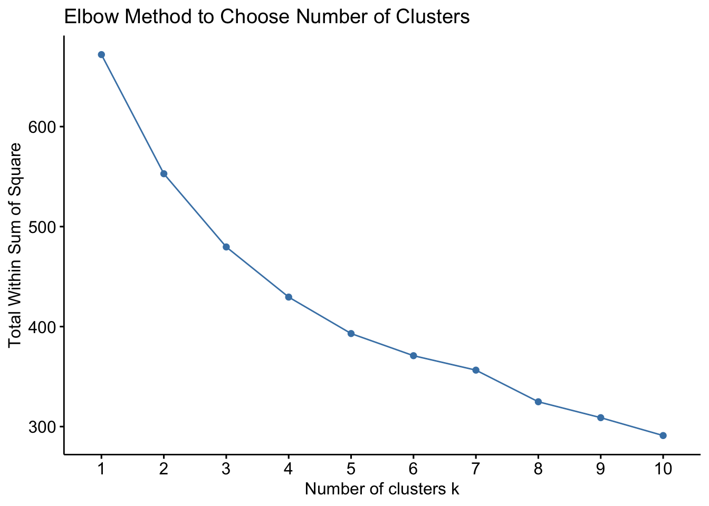
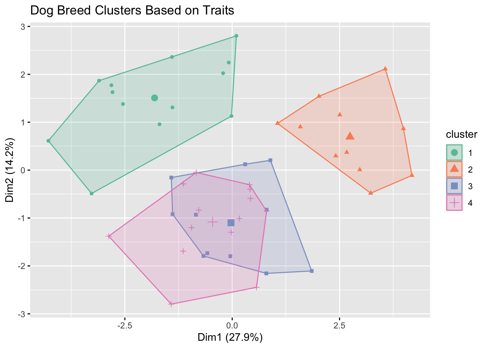
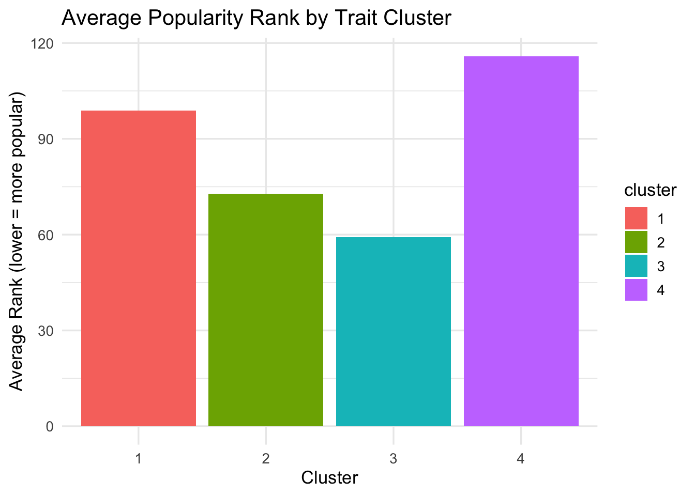

My Puppy - What Makes a Dog Popular?
Motivation
In a world where dogs are considered not just pets but beloved family members, understanding what drives the popularity of certain breeds offers a unique lens into broader societal trends. This project began with a simple question: Why do some dog breeds surge in popularity while others quietly fade from the spotlight? As dog ownership continues to rise across the U.S.—particularly among millennials and Gen Z—shifting breed preferences reflect larger lifestyle changes, including increased urban living, smaller households, and a growing emphasis on emotional well-being.
Beyond curiosity, this project has real-world relevance. For pet industry professionals, breeders, shelters, and prospective dog owners, identifying the traits linked to breed popularity can inform smarter decisions, from breeding strategies to adoption campaigns. Culturally, it invites us to consider how our evolving relationships with animals mirror the ways our lives and values are changing.
Research Question
This project explores shifting trends in dog breed popularity in the United States, aiming to uncover which breeds are gaining or losing favor over time and why. It investigates whether consistent behavioral or physical traits correlate with these popularity changes, providing insight into broader societal preferences. By applying machine learning techniques such as K-means clustering, the project seeks to group breeds based on shared characteristics and identify latent categories that appeal to different segments of the population. Ultimately, the goal is to reveal meaningful patterns in how Americans relate to dogs—and how that relationship is evolving over time.
Background
To understand this analysis, a few key concepts are helpful.
The American Kennel Club (AKC) ranks dog breeds by popularity each year based on registration data—lower ranks mean higher popularity. It also scores breeds on traits like Trainability, Energy Level, and Affectionate With Family, usually on a 1–5 scale.
Popularity Shift refers to the change in a breed’s rank from 2013 to 2020. A positive shift means rising popularity; a negative shift means decline.
The project also uses K-means clustering, a machine learning method that groups breeds by similar traits, revealing hidden categories of dogs that may reflect shifting owner preferences.
Data
- Data collection
The data used in this project was accessed using the tidytuesdayR R package, which provides easy access to datasets released as part of the TidyTuesday initiative. Alternatively, the same dataset can be downloaded directly from GitHub.
The main source of the data is the TidyTuesday GitHub repository, specifically the dataset released on February 1, 2022. This dataset includes information compiled for public data analysis and learning.
The original dog breed popularity rankings included in the dataset were sourced from the American Kennel Club (AKC) website, based on official registration data. These rankings provide a reliable foundation for exploring long-term trends in breed preferences across the U.S.
- Data Acquisition
The data for this project was accessed using the tidytuesdayR R package, which allows users to load weekly datasets provided by the TidyTuesday community. It was also available for direct download from GitHub for users who preferred manual access.
The primary source of the dataset is the TidyTuesday GitHub repository, specifically the release from February 1, 2022. Additionally, the original dog breed popularity rankings were obtained from the American Kennel Club (AKC) website, based on official registration records.
- Data Understanding
The dataset includes three files. The breed_traits.csv file contains information on 195 dog breeds, each evaluated across 23 different traits. The breed_rank.csv file provides annual popularity rankings for these same 195 breeds, spanning the years 2013 to 2020. The trait_description.csv file includes textual explanations for each of the 23 traits.
The types of data in these files include categorical or ordinal trait ratings (e.g., “Very Low” to “Very High”), numeric yearly rankings, and descriptive text for each trait. These diverse data types required appropriate handling for analysis.
Before beginning the analysis, several cleaning steps were necessary. Trait values in text format had to be converted into ordered factors or numerical scales to allow for comparison and modeling. Additionally, some breed names had slight inconsistencies across datasets and needed to be aligned to ensure accurate merging and analysis.
America’s Dog Preferences Are Changing: Who’s Gaining — and Who’s Dropping — in Popularity?
Between 2013 and 2020, America’s taste in dogs shifted notably, with certain breeds climbing the popularity ranks and others quietly fading from favor. A recent data analysis from the American Kennel Club’s breed rankings reveals telling trends in canine preferences, hinting at evolving lifestyle needs, aesthetic tastes, and family dynamics.
Overall Trend
A line chart tracking the top five rising dog breeds shows a clear upward trajectory in popularity between 2013 and 2020. Breeds such as the Beaucerons, Belgian Malinois, and Cane Corso experienced significant gains, with some jumping more than 20 spots in national ranking.
These breeds tend to be medium to large in size, loyal, quiet, and have high scores in affection and trainability—characteristics increasingly favored by urban middle class and suburban pet owners.

This second line chart tracking the top five falling dog breeds shows a consistent downward trend in popularity between 2013 and 2020. Breeds such as the American English Coonhounds, Chinooks, Salukis, Irish Water Spaniels, and Treeing Walker Coonhounds all dropped significantly in rank over this period.
These breeds are often more specialized in function—such as hunting or field work—and may require more space, exercise, or grooming than the average household pet owner prefers. As lifestyles become more urbanized and convenience-focused, these traits may make such breeds less compatible with modern pet ownership, contributing to their decline in popularity.
Why Some Breeds Are Gaining or Losing Popularity

This bar chart compares average trait scores between rising and falling dog breeds across 15 characteristics. Rising breeds score higher in Trainability, Playfulness, Affection With Family, and Adaptability, indicating a preference for dogs that are easier to train, more sociable, and better suited to modern lifestyles.
In contrast, falling breeds tend to score higher in Protective Nature, Drooling, and Grooming Needs, suggesting they require more maintenance and may be less compatible with urban or busy households.
Overall, the data points to a shift toward low-maintenance, affectionate, and adaptable dogs, reflecting changing owner preferences in today’s living environments.
Traits That Define Today’s Most (and Least) Popular Dogs
Continue with previous visualizations, we know what type of dogs are popular and have made a summary of them, but what are their specific characteristics? In the chart titled “Trait Comparison: Top 10 vs. Bottom 10 Dog Breeds,” we compared the behavioral and physical traits of the most popular breeds with those at the bottom of the popularity list.

A few standout trends emerged: Top 10 breeds (like the Beaucerons and Belgian) scored much higher on: Affectionate With Family Good With Children Trainability Playfulness Bottom 10 breeds were more likely to have: Higher Shedding Levels Greater Grooming Needs Lower Scores for Adaptability and Energy This suggests a clear preference for dogs that are easy to care for, eager to please, and great with families. Breeds that are more high-maintenance or aloof — even if charming in their own right — may be falling out of step with modern lifestyles.
###Grouping Dog Breeds by Traits: What Makes a Breed Popular? {.unnumbered}
K-means/Elbow Method/Clusters
K-Means Clustering: This is a machine learning method used to group similar items (in this case, dog breeds) based on multiple numeric traits. It helps uncover hidden groupings or “types” of dogs that might not align with traditional breed groupings. Popularity Shift (Rank Change): Defined as the difference in a breed’s ranking between 2013 and 2020. A positive value indicates rising popularity, and a negative value shows decline.



Each cluster = a behavioral or personality profile. You can describe them as:
The active adventurers The chill lap dogs The obedient family dogs The aloof independents
Cluster 1: High trainability, affectionate, moderate energy → “Family-Friendly, Obedient Breeds” Cluster 2: Super high energy, low trainability → “High-Drive Working Dogs”
️Cluster 3: Low energy, low shedding → “Laid-Back Companions”
Cluster 4: High grooming needs, moderate traits → “Show Dogs or Fancy Breeds”
Analyzing the clusters 2-D dimensions visualization and the average popularity rank by traits together we can know, cluster 1 and 3 stand out. Cluster 1 (Family Dogs) had by far the lowest average rank, making them the most popular group. Cluster 2 (Adventurers) and Cluster 4 (Show Dogs) lagged behind, possibly due to their high energy or grooming requirements. Cluster 3 (Lap Dogs) occupied the middle ground, offering a good compromise for many owners.
Trait Profiles Reveal Cluster Personalities
# A tibble: 4 × 16
cluster Affectionate With Fami…¹ Good With Young Chil…² `Good With Other Dogs`
<fct> <dbl> <dbl> <dbl>
1 1 3.69 3.23 3.31
2 2 5 4.64 3.91
3 3 4.64 3.82 3.09
4 4 4.5 3.57 3.29
# ℹ abbreviated names: ¹`Affectionate With Family`, ²`Good With Young Children`
# ℹ 12 more variables: `Shedding Level` <dbl>, `Coat Grooming Frequency` <dbl>,
# `Drooling Level` <dbl>, `Openness To Strangers` <dbl>,
# `Playfulness Level` <dbl>, `Watchdog/Protective Nature` <dbl>,
# `Adaptability Level` <dbl>, `Trainability Level` <dbl>,
# `Energy Level` <dbl>, `Barking Level` <dbl>,
# `Mental Stimulation Needs` <dbl>, rank <dbl>This table highlights how different breed clusters vary in sociability traits. Cluster 2 breeds are the most affectionate and family-friendly, making them ideal for households with children or multiple pets. In contrast, Cluster 1 shows the lowest scores in these traits, suggesting more independent or less social breeds. These distinctions help explain why certain clusters may be more popular with modern dog owners.
Conclusion
In the evolving world of pet ownership, America’s favorite dogs reflect more than just cuteness or tradition — they mirror our values, lifestyles, and changing daily realities. Through breed popularity data and trait analysis, a clear narrative emerges: the most beloved dog breeds today are those that are loyal, affectionate, adaptable, and easy to live with.
Machine learning deepened that story, revealing four distinct canine “personality clusters” — from the reliable, trainable family dogs to the independent show dogs and high-energy workers. The most popular breeds overwhelmingly came from clusters that emphasized emotional connection, low maintenance, and versatility, aligning with trends toward urban living, work-from-home routines, and active family dynamics.
Ultimately, this project underscores a simple truth: as our lives evolve, so do our choices in companionship. Today’s top dogs aren’t just pets — they’re partners, confidants, and reflections of who we are.
Limitations
While this project provides valuable insights into dog breed popularity trends, several limitations should be noted. First, the breed trait data is not time-stamped and assumes that traits remain static over time, which may not reflect evolving breed characteristics or owner perceptions. Second, the AKC registration data only includes purebred dogs registered in the U.S., potentially excluding popular mixed breeds or dogs registered under alternative systems. Lastly, the trait scores are somewhat subjective and based on generalizations, which may not capture the full range of variation within a breed. These factors may limit the generalizability of the findings to all dog owners or international contexts.